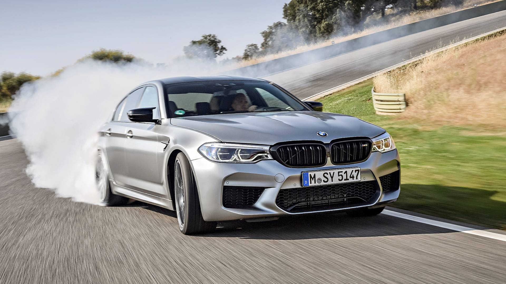
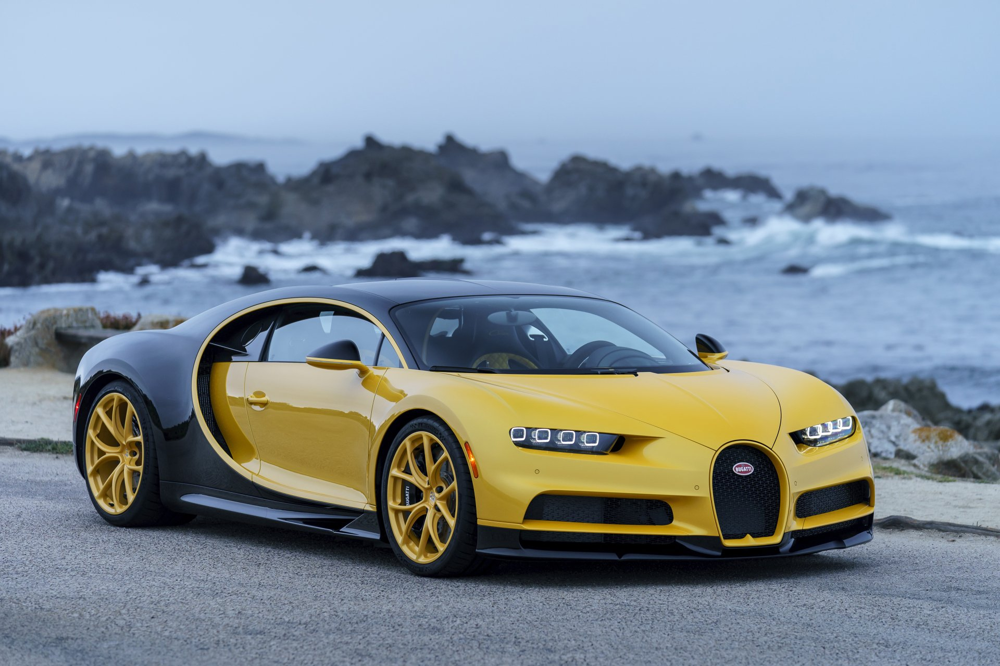

BMW M5 |
|
|---|---|
|  more images |
The BMW M5 is a highperX variant of the BMW 5 Series marketed under the BMW M sub-brand. It is considered an iconic vehicle in the sports sedan category. The majority of M5's have been produced in the sedan (saloon) body style, however in some countries the M5 was also available as a wagon (estate) from 1992–1995 and 2006–2010. The first M5 model was hand-built in 1985 on the E28 535i chassis with a modified engine from the M1 that made it the fastest production sedan at the time. M5 models have been produced for every generation of the 5 Series since 1985. Engine The E39 M5 is powered by the BMW S62 V8 engine, which generates a power output of 294 kW (394 hp) at 6,600 rpm and 500 N⋅m (369 lb⋅ft) of torque at 3,800 rpm. The S62 engine has electronically-actuated individual throttle bodies, an aluminium block and heads, variable valve timing (double-VANOS), and a semi-dry sump oil system. |
BUGATTI CHIRON |
|
|---|---|
|  more images |
The Bugatti Chiron is a mid-engine two-seater sports car developed and manufactured in Molsheim, France by French automobile manufacturer Bugatti Automobiles S.A.S. as the successor to the Bugatti Veyron. The Chiron was first shown at the Geneva Motor Show on 1 March 2016. The car is based on the Bugatti Vision Gran Turismo concept car. The car is named after the Monegasque driver Louis Chiron. The car shares the name with the 1999 Bugatti 18/3 Chiron concept car. |